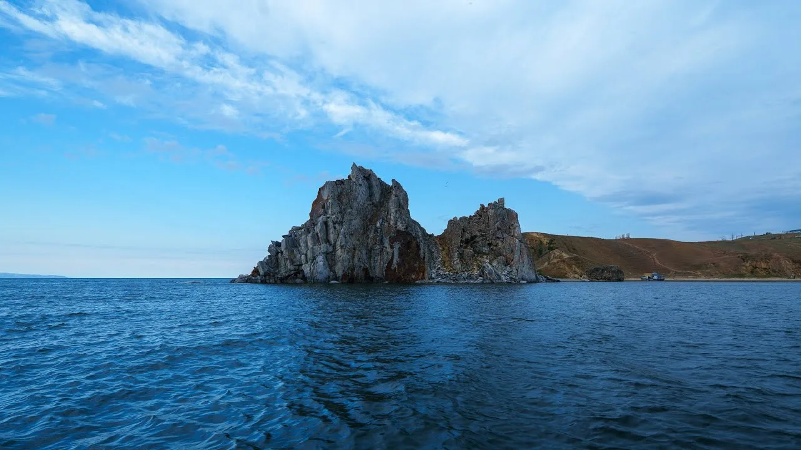
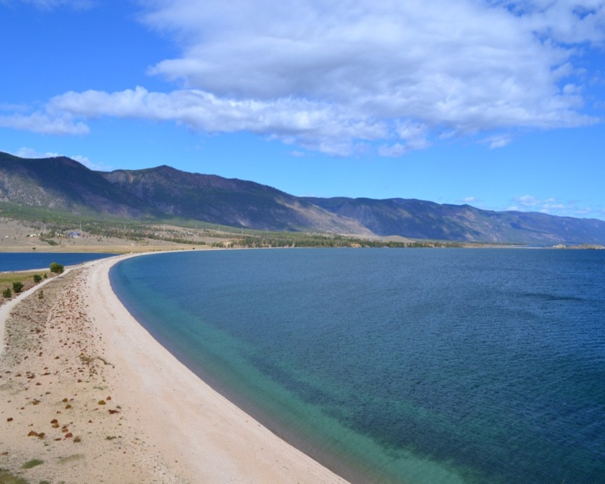
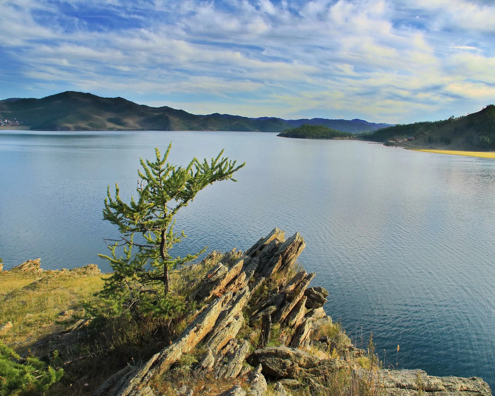
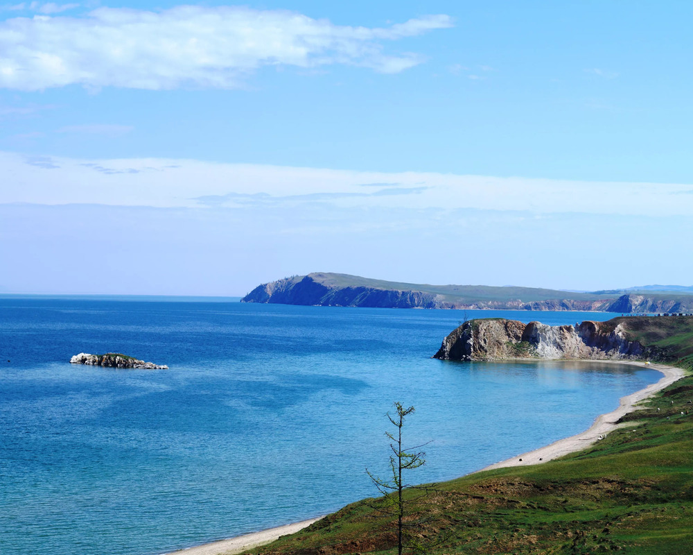
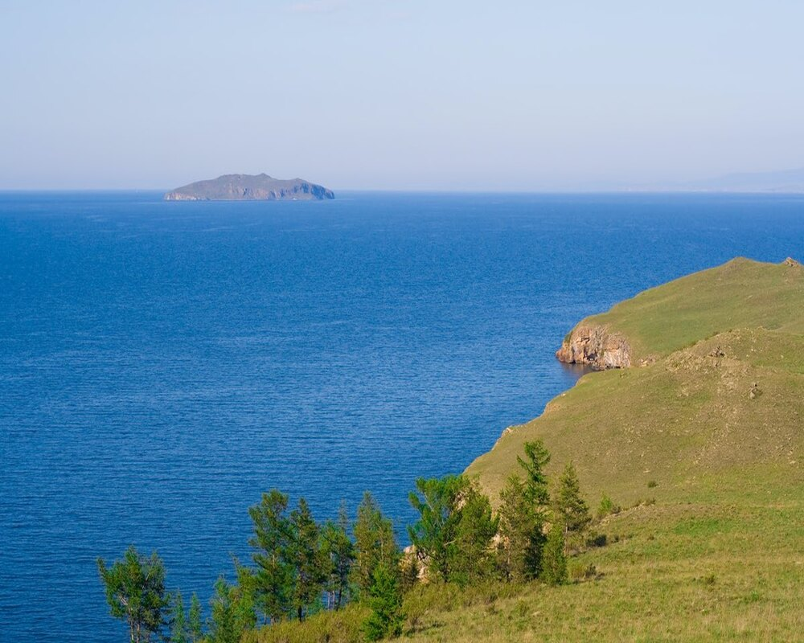

Малое Море — это пролив между западным берегом Байкала и островом Ольхон. Благодаря небольшой глубине вода здесь прогревается значительно быстрее, чем в открытой части озера, поэтому район считается одним из самых популярных мест летнего отдыха на Байкале.
Маршрут начинается в Иркутске и проходит по автомобильной дороге через посёлки Баяндай и Еланцы. Далее дорога выходит к побережью Малого Моря, где расположены многочисленные туристические базы, пляжи и смотровые площадки.
Побережье отличается большим количеством живописных бухт, песчаных участков и скалистых мысов. Благодаря относительно спокойной воде район подходит для семейного отдыха, прогулок на катерах и экскурсий.
Малое Море является одной из главных туристических зон Прибайкалья и ежегодно принимает тысячи путешественников со всей России.
≈250 км от Иркутска
Иркутск → Баяндай → Еланцы → Малое Море
Май – Сентябрь